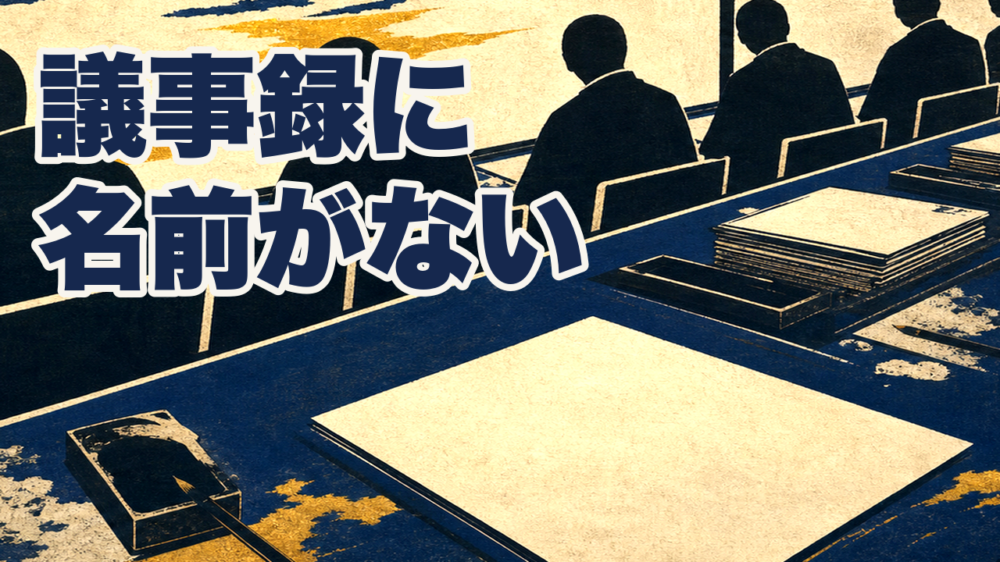
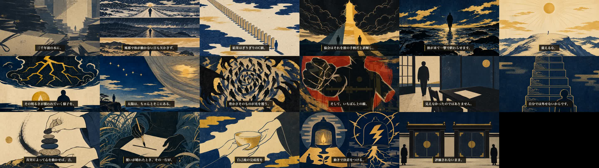

ワンパンマン×豊（ほう） ／ 8分30秒 ／ 台本の独立採点 95点 ／ releases/065/ep45.mp4
本番画質は releases/065/ep45.mp4（1920×1080・786MB）。冒頭の20秒だけでも聞いてみてください。
炎上を三日で鎮めた人は、報告書に名前が残ります。そもそも炎上させなかった人は、どこにも残りません。
何も起きなかった、という記録しかないからです。うまくやるほど、自分の仕事が消えていく。三千年前の本に、この消え方だけを書いた形があります。今日は、その話です。
前は「一番働いている人ほど、いなかったことになります」と結論から始めていました。意味を解読しないと入れない入口だったので、具体的な場面から入る形に変えています。
ここで刃を、自分に返します。私たちは覆われる側であると同時に、覆う側でもあります。事故が起きた日の反省会はやるのに、何も起きなかった日を、私は誰の手柄にもしてきませんでした。
刃は冒頭と同じ場面へ返さないと、罪がすり替わります。冒頭が「議事録」から「報告書／何も起きなかった日」に変わったので、刃も同じ世界に置き直しました。
そのうえで言うと、量が増えること自体が覆いになることはあると思っています。ここでサイタマを三番目の線に置きます。ただし彼が動けないのは戦いの中ではなく、協会の評価という系の中です。深海王を倒しても手柄は自分に付かず、隕石を砕けば信用が減る。この二つでは、功績が評価として届いていません。
前の稿は「何をしても順位が動かない」と書いていましたが、後半で「C級一位を経てB級へ上がった」と言っており矛盾していました。深海王と隕石の二事件に限定しています。


| 項目 | 実測 |
|---|---|
| 台本の独立採点 | 95点（冒頭フック／物語の橋渡し 両ゲート通過） |
| TTS読み誤り | 0件 / 31シーン |
| 字幕同期 | 31シーン PASS |
| 黒フレーム | 検出0 |
| 音のピーク | -3.5dB（クリップなし） |
| 尺 | 510.1秒（8分30秒） |
正式な mix ゲート（シーン境界の黒落ち検査を含む）は、台本の承認をいただくと上流ゲートが開いて実行できます。承認後すぐ回して結果を報告します。